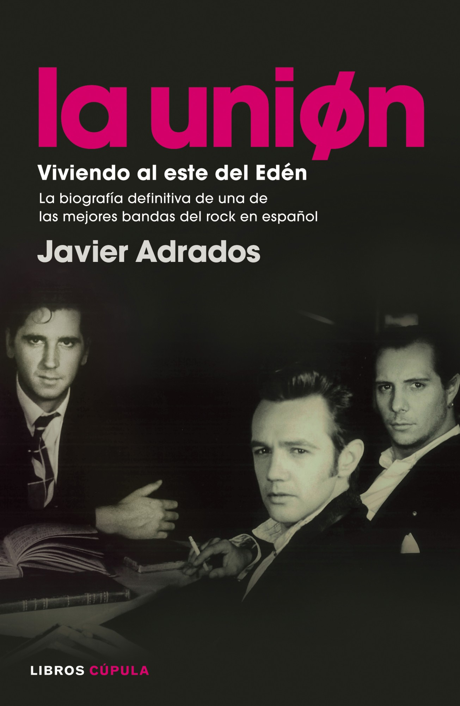

"Sorprenderá si digo que nuestra Región carecía de una Feria del Libro desde que se clausuró la última
en 2009, cuando empezó a hacer estragos la crisis financiera y la cultura fue inmolada en la
pila de sacrificios"
Tras la floración de los campos y los árboles, viene ahora la eclosión de las ideas. Si el mes pasado
un manto blanco, rosado, fucsia, lila, cubría nuestros huertos y frutales, son ahora los libros
lo que florecen en nuestras plazas y calles. Los que las llenan de color. Y es que Cieza se prepara
esta semana para acoger la Tercera Feria Regional del Libro Infantil y Juvenil que llenará nuestro
pueblo y otros municipios cercanos de actividades relacionadas con el mundo de la literatura
y el teatro.
Organizada por el Ayuntamiento y apoyada en esta ocasión por la Comunidad, esta Feria que surgió
como quien dice de la 'nada' en 2016 se ha convertido, en apenas dos años, en un evento cultural
de primer orden y en todo un referente para la Región de Murcia. Así lo reconoció el propio director
general de Bienes Culturales el día de su presentación junto al alcalde de Cieza.
No fue nada fácil, me cuenta Fernando Fernández Villa, uno de sus promotores. Y si se ha logrado
ha sido gracias al esfuerzo y la ilusión que pusieron en el empeño los participantes en la primera
edición, cuya colaboración desinteresada fue clave. Además, claro está, de la implicación de
la concejalía de Cultura de María Ramos y de la Biblioteca Municipal Padre Salmerón. o de varias
editoriales de Murcia y de Cieza (entre ellas Alfaqueque, que dirige el propio Fernando y cumple
ahora diez años, o La Fea Burguesía). Un esfuerzo, por cierto, el de la editoriales de la Región,
loable, ya que no cuentan con ninguna ayuda institucional, cosa que sí sucede en otras Comunidades
autónomas, por lo que deben subsistir, en tanto que industrias culturales que son, sólo con el
esfuerzo personal y económico de los editores.
Libros que unen

La Casa de Cultura promueve la creación de un club de lectura en el que se han inscrito 24 aficionados
y que lleva el nombre de "Kirta", una de las brujas de Delhy Tejero
Una de las brujas creadas por la artista toresana Delhy Tejero, "Kirta", da nombre al nuevo club
de lectura promovido por la Casa Municipal de Cultura que ha comenzado su andadura con 24 participantes
y que coordinará Teresa Fernández López. La idea de organizar este club de lectura en Toro surgió
después de que Fernández López se jubilara como trabajadora de la Casa Municipal de Cultura y
el director de la Biblioteca de Zamora, Jesús Carlos Portales, le propusiera el reto que ella
aceptó porque, entre otras cosas, es una apasionada de la lectura y de la Literatura. Tras exponer
la idea a la nueva directora de la Biblioteca de Toro y al resto de trabajadores de la entidad,
la Casa Municipal de Cultura convocó una reunión informativa para sondear el interés que la creación
del club de lectura podría despertar entre los toresanos.
A este primer encuentro acudieron más de treinta personas, aunque finalmente 24 aficionados a la
lectura mostraron su interés en participar en el club de lectura, lo que ha permitido formar
dos grupos que se reúnen los miércoles, cada dos semanas, con el objetivo de compartir opiniones
y sensaciones sobre las obras elegidas. En principio, los libros serán facilitados a los participantes
en préstamo bibliotecario gracias a la colaboración de otros centros culturales de la provincia
porque, "lo fundamental de cualquier club de lectura es que cada lector pueda disponer de un
ejemplar de la obra elegida", apuntó Fernández López. Para la primera sesión del club de lectura
y al no haberse elegido todavía ninguna lectura, la coordinadora decidió compartir con los participantes
uno de los cuadernos que escribió Delhy Tejero que, al margen de su reconocida faceta como pintora
e ilustradora, también plasmó algunas vivencias personales en sus "cuadernillos".